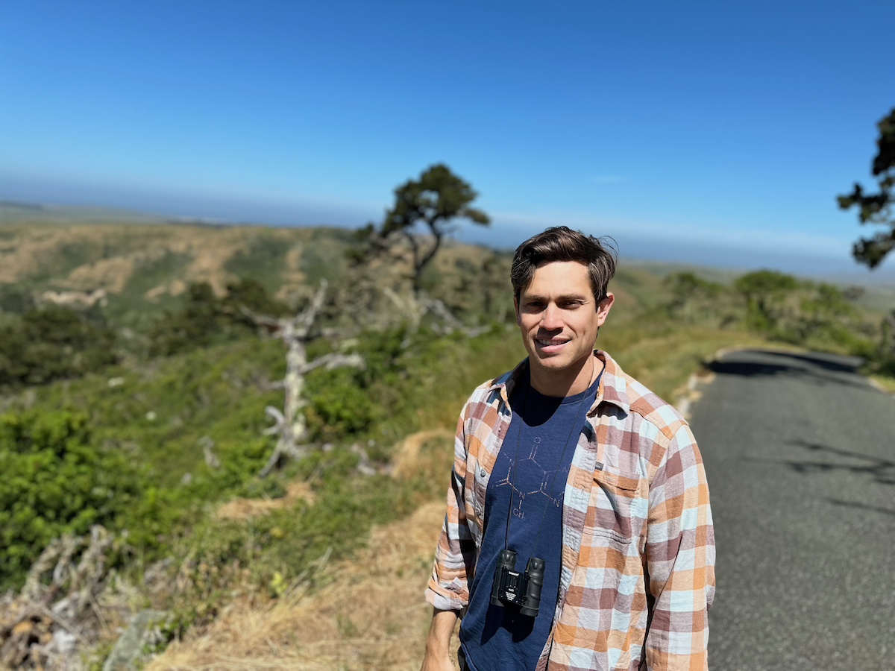

Dr. Louis Berrios, PhD
Assistant Professor of Ecology (incoming Fall 2027)

Louis Berrios is a microbial ecologist and incoming Assistant Professor of Ecology at the University of Notre Dame. His lab studies the mechanisms that support interactions among bacteria, mycorrhizal fungi, and host plants. Techniques such as genomics, metabolomics, and transcriptomics are employed to study the eco-evolutionary dynamics of complex community assmebly.
Our lab offically opens in Fall 2027, but we're considering applicants at all career stages!
If you're interested in joining the Berrios Lab, please send the following information to Lberrios@nd.edu: (1) brief expression of research interests (1 page max), (2) CV, and (3) contact information for three professional references. Please include your career stage and anticipated start date in the email subject line. Applications will be reviewed until all positions are filled. We anticipate hiring (1) postdoctoral researcher, (2) graduate students, and (1) research technician. We are particularly interested in candidates who have a passion for ectomycorrhizal fungi, forest ecology, bacteria-fungi interactions, and multi-omics data analyses. Those with strong publication records or technical expertise will be prioritized.
Postdoctoral Scientists
Interested applicants must have strong computational, molecular, and writing skills. Those with evidenced experience using R, command-line, and/or Python to analyze complex microbial and/or plant sequence data will be given priority. We anticipate that this hire will conduct field work at UNDERC (see https://underc.nd.edu for more information). Those also interested in submitting a NSF PRFB or Smith Fellowship should reach out as soon as possible to discuss details.
Graduate Students
We are actively recruiting (2) graduate students for Fall 2027. Please reach out if you're interested, as the application deadline is in early December (see https://biology.nd.edu/graduate/ for details). Students with a passion and strong background in microbial and/or plant ecology are encouraged to apply. Opportunities to conduct research at UNDERC, throughout the midwest, and coastal California are available.
Research Technician / Lab Manager
We are looking for a highly organized and motivated person to help build the Berrios Lab's infrastructure. Prior experience maintaining culture libraries, making reagents, and growing plants is preferred.
Undergaduate Researchers
We believe that undergraduate researchers are key pillars to successful and efficient labs. Students interested in plant biology, computational biology, genetics, metabolic modeling, and bacteria-fungi interactions would have ample opportunities to strengthen their interdisciplinary skills.
High School Students
Internship opportunties will be posted when available. Please email lberrios@nd.edu for inquiries.
Guiding Inspiration
"We are drowing in knowledge, while starving for wisdom." -E.O. Wilson
Phone
(574) 631-6552Address
The University of Notre DameDepartment of Biological Sciences
Notre Dame, IN 46556
United States of America